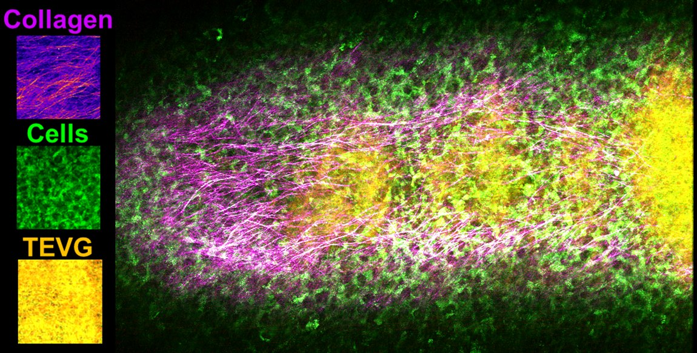

Repair-fate biology
Why do similar immune programs support regeneration in one injury context but drive fibrosis, degeneration, or failed repair in another?
Biomedical Engineering · Immunoengineering · Regenerative Medicine
Immunomechanical control of tissue repair fate
I study how immune context, material design, and mechanical forces determine whether injured tissues regenerate, remodel, scar, or fail.
About
I am a postdoctoral associate in Bioengineering at the University of Pittsburgh, where I study how immune responses, biomaterial design, and mechanical forces shape tissue repair. My work integrates immunoengineering, regenerative medicine, biomechanics, two-photon imaging, and 3D/ex vivo culture systems.
Across injury models and engineered vascular tissues, I focus on the mechanisms that separate constructive repair from fibrosis, degeneration, aneurysmal remodeling, and graft failure. My long-term goal is to define design rules for therapies that guide injured tissues toward durable, functional repair.
Research pillars
Why do similar immune programs support regeneration in one injury context but drive fibrosis, degeneration, or failed repair in another?
How do material architecture, mechanical loading, inflammatory state, and stromal remodeling interact after implantation?
Can 3D culture, explant systems, imaging, and mechanics-informed assays reveal repair-control rules before expensive animal studies?
Featured research visual
Longitudinal imaging of engineered tissue systems can reveal how collagen organization, cell invasion, and material structure evolve together during repair.

Selected publications
Three studies spanning repair-fate biology, predictive platforms, and biomaterial immunomechanics.